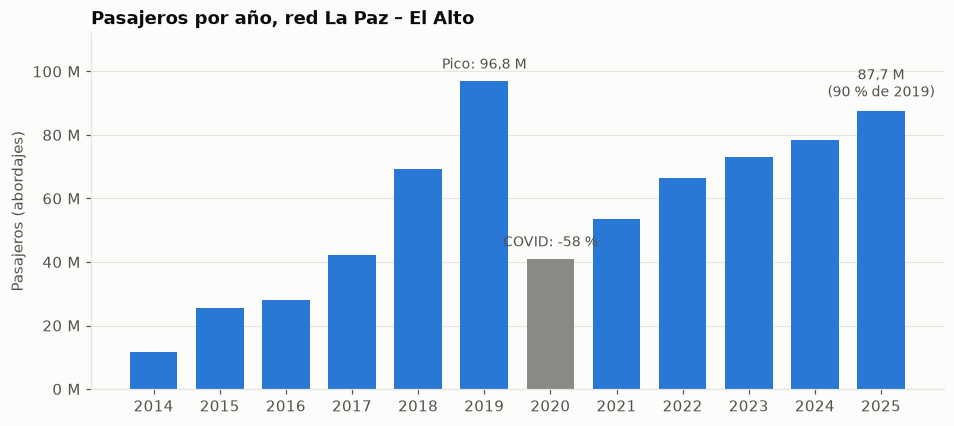
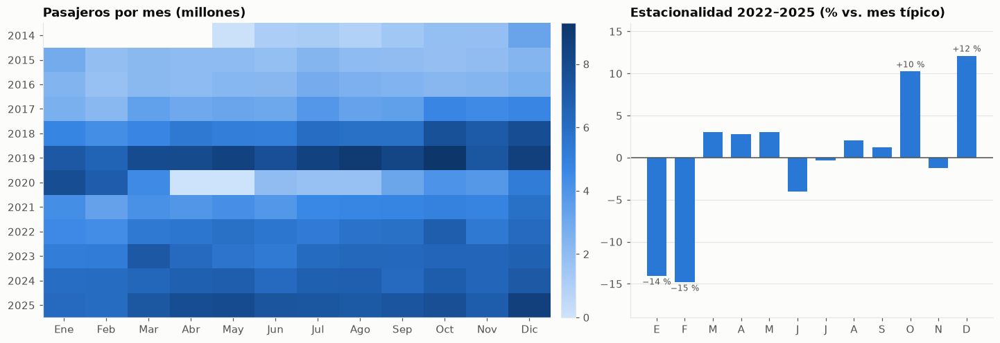
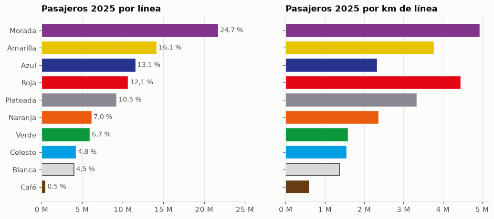
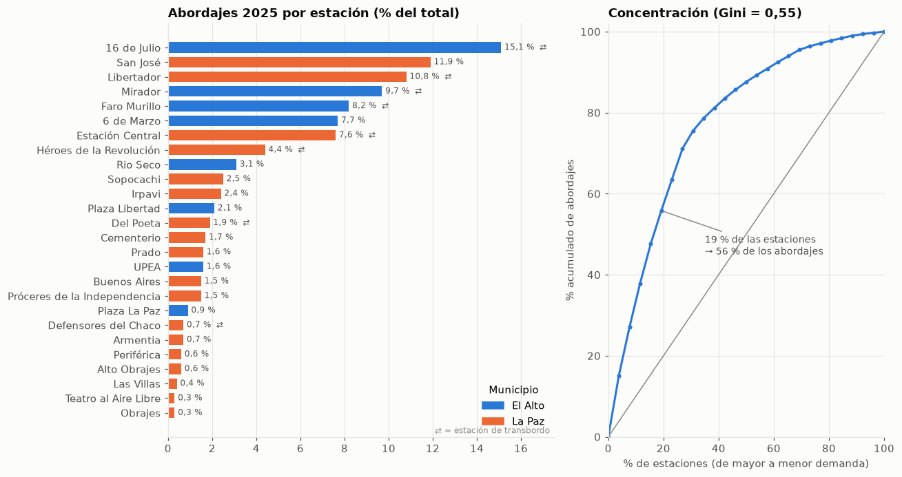

01 · EDA de demanda: ¿cómo se mueve la gente en Mi Teleférico?
Pregunta: ¿cómo evolucionó la demanda del teleférico La Paz–El Alto entre 2014 y 2025, qué líneas y estaciones concentran los viajes y qué nos dice eso sobre dónde hace falta más red?
Fuentes (ver docs/plan.md §4): - Indicadores de Gestión mayo 2014 – dic 2025 de Mi Teleférico (PDF oficial): series anuales, por línea, mensuales y ranking de pasajeros por estación. Extraídas y validadas en teleferico.ingest.mt_pdf. - GTFS comunitario (Datos Bolivia): estaciones, líneas y longitudes. - Censo 2024 (INE vía censosbo): población por municipio.
Unidad: “pasajeros” = vidas transportadas según Mi Teleférico, es decir abordajes (un transbordo cuenta como un nuevo abordaje en la estación de transbordo). Solo red La Paz – El Alto (se excluye el teleférico turístico de Oruro).
Ver código
import matplotlib.pyplot as pltimport matplotlib.ticker as mtickerimport numpy as npimport pandas as pdfrom teleferico import demanda as dfrom teleferico import vizfrom teleferico.config import PROCESSEDviz.estilo()pd.set_option("display.float_format", lambda x: f"{x:,.1f}")t = d.cargar()kpi = d.kpis(t)anual = d.serie_anual(t["anual"], t["mensual"])
1. Evolución anual: crecimiento, choque COVID y recuperación incompleta
Ver código
fig, ax = plt.subplots(figsize=(10, 4.2))colores = [viz.TINTA_3 if a ==2020else viz.ACENTO for a in anual["anio"]]ax.bar(anual["anio"], anual["pasajeros"], color=colores, width=0.72)ax.yaxis.set_major_formatter(mticker.FuncFormatter(viz.millones))ax.set_xticks(anual["anio"])ax.grid(axis="x", visible=False)ax.set_title("Pasajeros por año, red La Paz – El Alto")ax.set_ylabel("Pasajeros (abordajes)")def nota(anio, texto, dy=3e6): y = anual.set_index("anio").loc[anio, "pasajeros"] ax.annotate(texto, (anio, y + dy), ha="center", va="bottom", fontsize=9, color=viz.TINTA_2)nota(2019, f"Pico: {viz.num(kpi['pasajeros_2019']/1e6)} M")nota(2020, f"COVID: {viz.num(kpi['caida_2020_pct'], 0)} %")nota(2025, f"{viz.num(kpi['pasajeros_2025']/1e6)} M\n({viz.num(kpi['indice_2025_vs_2019'], 0)} % de 2019)")ax.set_ylim(0, 112e6)viz.guardar(fig, "01_anual")plt.show()anual[["anio", "pasajeros", "var_pct", "indice_2019", "dias_operacion", "promedio_diario"]].set_index("anio")

pasajeros
var_pct
indice_2019
dias_operacion
promedio_diario
anio
2014
11541743
NaN
11.9
216
53,434.0
2015
25388582
120.0
26.2
365
69,557.8
2016
27961821
10.1
28.9
366
76,398.4
2017
42067553
50.4
43.4
365
115,253.6
2018
69416181
65.0
71.7
365
190,181.3
2019
96842192
39.5
100.0
365
265,321.1
2020
40893145
-57.8
42.2
305
134,075.9
2021
53391664
30.6
55.1
365
146,278.5
2022
66357879
24.3
68.5
365
181,802.4
2023
72924955
9.9
75.3
365
199,794.4
2024
78340151
7.4
80.9
366
214,044.1
2025
87672207
11.9
90.5
365
240,197.8
Lectura: - La red creció por expansión: cada inauguración (Azul y Naranja en 2017; Blanca, Celeste, Morada y Café en 2018; Plateada en 2019) sumó un escalón. El pico fue 2019 con ~96,8 M de pasajeros. - La cuarentena de 2020 recortó la demanda un 58 % (sin servicio en abril y mayo). La serie mensual también muestra la caída de noviembre de 2019 (conflicto post-electoral). - 2025 cerró con 87,7 M (+11,9 % interanual), pero todavía ~9,5 % por debajo de 2019. Recuperación sostenida, aún incompleta. ¿Es pareja entre líneas? Ver §3.
mat = d.matriz_mensual(t["mensual"])ind = d.indice_estacional(t["mensual"])fig, (a1, a2) = plt.subplots(1, 2, figsize=(13, 4.4), gridspec_kw={"width_ratios": [1.4, 1]}, layout="constrained")cmap = plt.matplotlib.colors.LinearSegmentedColormap.from_list("azul", viz.SECUENCIAL)im = a1.imshow(mat.to_numpy() /1e6, aspect="auto", cmap=cmap)a1.set_xticks(range(12), d.MESES)a1.set_yticks(range(len(mat)), mat.index)a1.grid(False)a1.set_title("Pasajeros por mes (millones)")fig.colorbar(im, ax=a1, fraction=0.04, pad=0.02)# Variación porcentual frente a un mes típico (0 = mes típico).var = (ind -1) *100a2.bar(range(12), var, color=viz.ACENTO, width=0.7)a2.axhline(0, color=viz.TINTA_2, lw=1)a2.set_xticks(range(12), [m[0] for m in d.MESES])a2.set_ylim(-19, 16)a2.set_title(f"Estacionalidad {d.ANIOS_ESTACIONALIDAD[0]}–{d.ANIOS_ESTACIONALIDAD[-1]} (% vs. mes típico)")a2.grid(axis="x", visible=False)for x, v inenumerate(var):ifabs(v) >=8: a2.annotate(f"{v:+.0f} %".replace("-", "−"), (x, v), ha="center", va="bottom"if v >0else"top", fontsize=8, color=viz.TINTA_2, xytext=(0, 2if v >0else-2), textcoords="offset points")viz.guardar(fig, "01_estacionalidad")plt.show()

Lectura: fuera del período COVID la estacionalidad es moderada y estable: - Enero y febrero son los meses más bajos (14-15 % por debajo de un mes típico): vacaciones escolares y universitarias de verano y Carnaval. - Octubre y diciembre son los picos (+10 % y +12 %): ciclo académico y comercio de fin de año. - Implicación: la demanda es estructural (trabajo y estudio), no turística. Una línea nueva debe pensarse para viajes cotidianos, no para picos estacionales.
3. Líneas: quién mueve a quién y cuánto rinde cada km de cable
Ver código
lin = d.resumen_lineas(t)orden = lin.sort_values("pasajeros").indexfig, (a1, a2) = plt.subplots(1, 2, figsize=(11, 4.6), sharey=True)viz.barras_lineas(a1, orden, lin.loc[orden, "pasajeros"], height=0.7)a1.xaxis.set_major_formatter(mticker.FuncFormatter(viz.millones))a1.set_title("Pasajeros 2025 por línea")for y, l inenumerate(orden): a1.text(lin.loc[l, "pasajeros"] +3e5, y, f"{viz.num(lin.loc[l, 'participacion_pct'])} %", va="center", fontsize=9, color=viz.TINTA_2)a1.set_xlim(0, 25e6)viz.barras_lineas(a2, orden, lin.loc[orden, "pasajeros_por_km"], height=0.7)a2.xaxis.set_major_formatter(mticker.FuncFormatter(viz.millones))a2.set_title("Pasajeros 2025 por km de línea")for ax in (a1, a2): ax.grid(axis="y", visible=False)viz.guardar(fig, "01_lineas")plt.show()lin[["pasajeros", "participacion_pct", "km", "km_pct", "estaciones", "pasajeros_por_km","var_vs_anio_previo_pct", "var_vs_2019_pct"]]

pasajeros
participacion_pct
km
km_pct
estaciones
pasajeros_por_km
var_vs_anio_previo_pct
var_vs_2019_pct
linea
Morada
21,663,328.0
24.7
4.4
14.2
3
4,929,197.0
2.5
2.8
Amarilla
14,099,826.0
16.1
3.8
12.1
4
3,758,951.2
14.1
-13.8
Azul
11,486,761.0
13.1
5.0
16.0
5
2,313,640.2
10.8
16.7
Roja
10,602,920.0
12.1
2.4
7.7
3
4,442,874.5
11.3
-12.9
Plateada
9,178,149.0
10.5
2.8
8.9
3
3,321,204.6
12.5
47.4
Naranja
6,110,889.0
7.0
2.6
8.4
4
2,351,698.7
17.8
-30.9
Verde
5,901,375.0
6.7
3.7
12.0
4
1,582,138.1
25.6
-28.5
Celeste
4,202,324.0
4.8
2.7
8.8
4
1,536,386.4
31.6
-35.6
Blanca
3,978,489.0
4.5
2.9
9.3
4
1,374,547.1
18.7
-40.1
Café
448,246.0
0.5
0.7
2.4
2
598,459.3
19.1
-49.8
Lectura: - Morada (6 de Marzo – Faro Murillo – San José/Obelisco, la conexión más directa de El Alto al centro de La Paz) lleva 1 de cada 4 pasajeros (24,7 %) con el 14 % de los km. Es la más productiva: ~4,9 M pasajeros por km. - Roja (16 de Julio – Estación Central) es la segunda más productiva por km. Las dos líneas que bajan de El Alto al centro son las más intensas. - Café (0,7 km, 2 estaciones) apenas mueve 0,45 M/año: una línea de enlace muy corta y subutilizada.
Lectura: la recuperación no es pareja, y el patrón es geográfico. - Ya superaron 2019 las líneas que sirven a El Alto: Plateada (147: recorre el borde de El Alto entre 16 de Julio, Faro Murillo y Mirador), Azul (117: el eje de la Av. 16 de Julio en El Alto, Río Seco – 16 de Julio) y Morada (103). - Siguen muy por debajo las líneas internas de La Paz: Café (50), Blanca (60), Celeste (64), Naranja (69) y Verde (72). - Hipótesis para las fases siguientes: la demanda del teleférico la mueve sobre todo El Alto (población más grande, viajes largos y con desnivel hacia La Paz). En La Paz, la oferta competidora (minibuses, PumaKatari, auto propio) y los cambios de movilidad post-COVID pesan más.
4. Estaciones: alta concentración en pocos nodos
Ver código
est = d.estaciones_fisicas(t)col_mun = {"El Alto": viz.ACENTO, "La Paz": "#eb6834"}e = est.sort_values("pct")fig, (a1, a2) = plt.subplots(1, 2, figsize=(12, 6.4), gridspec_kw={"width_ratios": [1.4, 1]})a1.barh(e["nombre"], e["pct"], color=[col_mun[m] for m in e["municipio"]], height=0.72)for y, (p, tr) inenumerate(zip(e["pct"], e["transbordo"])): a1.text(p +0.15, y, f"{viz.num(p)} %"+ (" ⇄"if tr else""), va="center", fontsize=8, color=viz.TINTA_2)a1.set_title("Abordajes 2025 por estación (% del total)")a1.grid(axis="y", visible=False)a1.set_xlim(0, 17.5)a1.legend(handles=[plt.Rectangle((0, 0), 1, 1, color=c) for c in col_mun.values()], labels=list(col_mun), loc="lower right", title="Municipio")a1.text(17.3, -1.4, "⇄ = estación de transbordo", ha="right", fontsize=8, color=viz.TINTA_3)conc = d.curva_concentracion(est["pasajeros_est"])a2.plot(np.r_[0, conc["pct_estaciones"]], np.r_[0, conc["pct_demanda"]], color=viz.ACENTO, marker="o", ms=3)a2.plot([0, 100], [0, 100], color=viz.TINTA_3, lw=1)x50, y50 = conc.loc[conc["pct_demanda"] >=50].iloc[0]a2.annotate(f"{x50:.0f} % de las estaciones\n→ {y50:.0f} % de los abordajes", (x50, y50), xytext=(35, 45), textcoords="data", fontsize=9, color=viz.TINTA_2, arrowprops={"arrowstyle": "-", "color": viz.TINTA_3})a2.set_xlabel("% de estaciones (de mayor a menor demanda)")a2.set_ylabel("% acumulado de abordajes")a2.set_title(f"Concentración (Gini = {viz.num(kpi['gini_estaciones_2025'], 2)})")a2.set_xlim(0, 100); a2.set_ylim(0, 102)fig.tight_layout()viz.guardar(fig, "01_estaciones")plt.show()

El Alto frente a La Paz: población, estaciones y abordajes
Lectura: - La demanda está muy concentrada: 5 estaciones (19 % del total) generan más de la mitad de los abordajes, y las 6 menos usadas no llegan al 3 %. Los nodos fuertes son cabeceras en el borde de El Alto (16 de Julio, Faro Murillo, 6 de Marzo, Mirador) y sus pares de llegada en La Paz (San José, Libertador, Estación Central). - El Alto tiene el 54 % de la población pero solo el 31 % de las estaciones (8 de 26), y aun así genera el 48 % de los abordajes. Cada estación alteña rinde mucho más que una paceña, señal de demanda insatisfecha y de áreas de captación muy grandes en El Alto. - Las estaciones alteñas están casi todas sobre el borde del altiplano (la “ceja”) y el eje de la Av. 16 de Julio. Todavía no se sabe cuánta población del interior y la periferia de El Alto queda a más de 15 minutos a pie de una estación: eso lo mide la Fase 3.
5. Conclusiones e hipótesis para las siguientes fases
#
Hallazgo
Implicación para el proyecto
1
87,7 M de pasajeros en 2025 (+11,9 %), aún 9,5 % bajo el pico de 2019
El sistema sigue creciendo: hay espacio para una expansión
2
Las líneas que sirven a El Alto ya superaron 2019 (Plateada 147, Azul 117, Morada 103); las internas de La Paz siguen en 50-72
La demanda la mueve El Alto → buscar la nueva línea ahí primero
3
El Alto: 54 % de la población, 31 % de las estaciones, 48 % de los abordajes
Alta productividad por estación = subcobertura probable (H2 del plan)
4
5 estaciones concentran el 56 % de los abordajes (Gini 0,55)
Grandes áreas de captación → medir el acceso real a pie con pendiente (Fase 3)
5
Estacionalidad baja y estable (ene-feb −14 %, oct/dic +10-12 %)
Demanda cotidiana: diseñar para viajes de trabajo y estudio
6
Morada: 25 % de los pasajeros con 14 % de los km; Café: 0,5 %
La productividad por km depende de conectar zonas densas con el centro, no de la longitud
Siguiente paso (notebook 02-03): cobertura poblacional a 5/10/15/20 minutos a pie, con la velocidad corregida por pendiente, para cuantificar cuánta población queda lejos del cable y dónde.
Anexo: exportación de datos para el sitio
Ver código
from teleferico.export_web import exportar_demandaexportar_demanda(t)pd.Series(kpi)